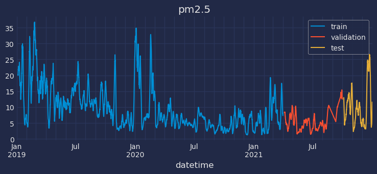
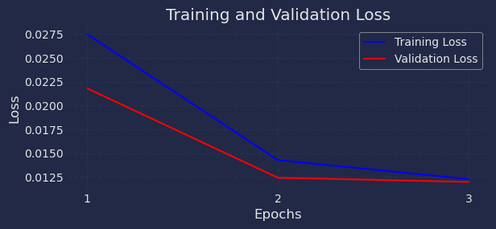
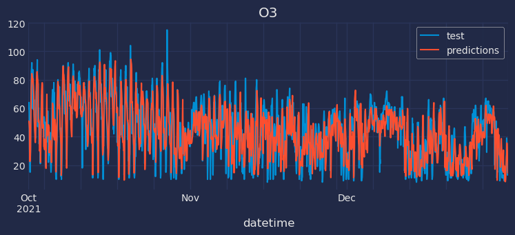

%%capture
!pip install skforecast
%%capture
!pip install sktime
# Libraries
# ==============================================================================
import os
#os.environ["KERAS_BACKEND"] = "torch" # 'tensorflow', 'jax´ or 'torch'
os.environ["KERAS_BACKEND"] = "tensorflow" # 'tensorflow', 'jax´ or 'torch'
import keras
import numpy as np
import pandas as pd
import matplotlib.pyplot as plt
from sklearn.preprocessing import MinMaxScaler
import skforecast
from skforecast.datasets import fetch_dataset
from skforecast.plot import set_dark_theme
from skforecast.ForecasterRnn import ForecasterRnn
from skforecast.ForecasterRnn.utils import create_and_compile_model
from skforecast.model_selection_multiseries import backtesting_forecaster_multiseries
from keras.optimizers import Adam
from keras.losses import MeanSquaredError
from keras.callbacks import EarlyStopping
import warnings
warnings.filterwarnings('once')
print(f"skforecast version: {skforecast.__version__}")
print(f"keras version: {keras.__version__}")
if keras.__version__ > "3.0":
print(f"Using backend: {keras.backend.backend()}")
if keras.backend.backend() == "tensorflow":
import tensorflow
print(f"tensorflow version: {tensorflow.__version__}")
elif keras.backend.backend() == "torch":
import torch
print(f"torch version: {torch.__version__}")
else:
print("Backend not recognized. Please use 'tensorflow' or 'torch'.")
---------------------------------------------------------------------------
ModuleNotFoundError Traceback (most recent call last)
Cell In[3], line 6
4 #os.environ["KERAS_BACKEND"] = "torch" # 'tensorflow', 'jax´ or 'torch'
5 os.environ["KERAS_BACKEND"] = "tensorflow" # 'tensorflow', 'jax´ or 'torch'
----> 6 import keras
8 import numpy as np
9 import pandas as pd
ModuleNotFoundError: No module named 'keras'
# Data download
# ==============================================================================
air_quality = fetch_dataset(name="air_quality_valencia")
# Data preparation
# ==============================================================================
air_quality = air_quality.interpolate(method="linear")
air_quality = air_quality.sort_index()
air_quality.head()
air_quality_valencia
--------------------
Hourly measures of several air chemical pollutant (pm2.5, co, no, no2, pm10,
nox, o3, so2) at Valencia city.
Red de Vigilancia y Control de la Contaminación Atmosférica, 46250054-València
- Centre, https://mediambient.gva.es/es/web/calidad-ambiental/datos-historicos.
Shape of the dataset: (26304, 10)
| pm2.5 | co | no | no2 | pm10 | nox | o3 | veloc. | direc. | so2 | |
|---|---|---|---|---|---|---|---|---|---|---|
| datetime | ||||||||||
| 2019-01-01 00:00:00 | 19.0 | 0.2 | 3.0 | 36.0 | 22.0 | 40.0 | 16.0 | 0.5 | 262.0 | 8.0 |
| 2019-01-01 01:00:00 | 26.0 | 0.1 | 2.0 | 40.0 | 32.0 | 44.0 | 6.0 | 0.6 | 248.0 | 8.0 |
| 2019-01-01 02:00:00 | 31.0 | 0.1 | 11.0 | 42.0 | 36.0 | 58.0 | 3.0 | 0.3 | 224.0 | 8.0 |
| 2019-01-01 03:00:00 | 30.0 | 0.1 | 15.0 | 41.0 | 35.0 | 63.0 | 3.0 | 0.2 | 220.0 | 10.0 |
| 2019-01-01 04:00:00 | 30.0 | 0.1 | 16.0 | 39.0 | 36.0 | 63.0 | 3.0 | 0.4 | 221.0 | 11.0 |
air_quality
| pm2.5 | co | no | no2 | pm10 | nox | o3 | veloc. | direc. | so2 | |
|---|---|---|---|---|---|---|---|---|---|---|
| datetime | ||||||||||
| 2019-01-01 00:00:00 | 19.0 | 0.2 | 3.0 | 36.0 | 22.0 | 40.0 | 16.0 | 0.5 | 262.0 | 8.0 |
| 2019-01-01 01:00:00 | 26.0 | 0.1 | 2.0 | 40.0 | 32.0 | 44.0 | 6.0 | 0.6 | 248.0 | 8.0 |
| 2019-01-01 02:00:00 | 31.0 | 0.1 | 11.0 | 42.0 | 36.0 | 58.0 | 3.0 | 0.3 | 224.0 | 8.0 |
| 2019-01-01 03:00:00 | 30.0 | 0.1 | 15.0 | 41.0 | 35.0 | 63.0 | 3.0 | 0.2 | 220.0 | 10.0 |
| 2019-01-01 04:00:00 | 30.0 | 0.1 | 16.0 | 39.0 | 36.0 | 63.0 | 3.0 | 0.4 | 221.0 | 11.0 |
| ... | ... | ... | ... | ... | ... | ... | ... | ... | ... | ... |
| 2021-12-31 19:00:00 | 31.0 | 0.1 | 20.0 | 36.0 | 34.0 | 66.0 | 13.0 | 0.1 | 87.0 | 3.0 |
| 2021-12-31 20:00:00 | 33.0 | 0.1 | 25.0 | 38.0 | 39.0 | 75.0 | 13.0 | 0.1 | 67.0 | 4.0 |
| 2021-12-31 21:00:00 | 34.0 | 0.1 | 24.0 | 36.0 | 42.0 | 73.0 | 13.0 | 0.1 | 84.0 | 5.0 |
| 2021-12-31 22:00:00 | 43.0 | 0.1 | 22.0 | 32.0 | 50.0 | 66.0 | 14.0 | 0.1 | 112.0 | 5.0 |
| 2021-12-31 23:00:00 | 50.0 | 0.1 | 22.0 | 28.0 | 57.0 | 61.0 | 13.0 | 0.1 | 74.0 | 3.0 |
26304 rows × 10 columns
# Checking the frequency of the time series
# ==============================================================================
print(f"Index: {air_quality.index.dtype}")
print(f"Frequency: {air_quality.index.freq}")
Index: datetime64[ns]
Frequency: <Hour>
# Split train-validation-test
# ==============================================================================
end_train = "2021-03-31 23:59:00"
end_validation = "2021-09-30 23:59:00"
air_quality_train = air_quality.loc[:end_train, :].copy()
air_quality_val = air_quality.loc[end_train:end_validation, :].copy()
air_quality_test = air_quality.loc[end_validation:, :].copy()
print(
f"Dates train : {air_quality_train.index.min()} --- "
f"{air_quality_train.index.max()} (n={len(air_quality_train)})"
)
print(
f"Dates validation : {air_quality_val.index.min()} --- "
f"{air_quality_val.index.max()} (n={len(air_quality_val)})"
)
print(
f"Dates test : {air_quality_test.index.min()} --- "
f"{air_quality_test.index.max()} (n={len(air_quality_test)})"
)
Dates train : 2019-01-01 00:00:00 --- 2021-03-31 23:00:00 (n=19704)
Dates validation : 2021-04-01 00:00:00 --- 2021-09-30 23:00:00 (n=4392)
Dates test : 2021-10-01 00:00:00 --- 2021-12-31 23:00:00 (n=2208)
air_quality_train['o3']
datetime
2019-01-01 00:00:00 16.0
2019-01-01 01:00:00 6.0
2019-01-01 02:00:00 3.0
2019-01-01 03:00:00 3.0
2019-01-01 04:00:00 3.0
...
2021-03-31 19:00:00 80.0
2021-03-31 20:00:00 77.0
2021-03-31 21:00:00 71.0
2021-03-31 22:00:00 59.0
2021-03-31 23:00:00 50.0
Freq: h, Name: o3, Length: 19704, dtype: float64
# Plotting one feature
# ==============================================================================
set_dark_theme()
fig, ax = plt.subplots(figsize=(8, 3))
air_quality_train["pm2.5"].rolling(100).mean().plot(ax=ax, label="train")
air_quality_val["pm2.5"].rolling(100).mean().plot(ax=ax, label="validation")
air_quality_test["pm2.5"].rolling(100).mean().plot(ax=ax, label="test")
ax.set_title("pm2.5")
ax.legend();

Multi Step Univariate#
# Model creation
# ==============================================================================
# Model creation
# ==============================================================================
series = ["o3"] # Series used as predictors
levels = ["o3"] # Target serie to predict
lags = 32 # Past time steps to be used to predict the target
steps = 5 # Future time steps to be predicted
model = create_and_compile_model(
series=data_train,
levels=levels,
lags=lags,
steps=steps,
recurrent_layer="LSTM",
recurrent_units=50,
dense_units=32,
optimizer=Adam(learning_rate=0.01),
loss=MeanSquaredError()
)
model.summary()
---------------------------------------------------------------------------
NameError Traceback (most recent call last)
Cell In[39], line 11
7 lags = 32 # Past time steps to be used to predict the target
8 steps = 5 # Future time steps to be predicted
10 model = create_and_compile_model(
---> 11 series=data_train,
12 levels=levels,
13 lags=lags,
14 steps=steps,
15 recurrent_layer="LSTM",
16 recurrent_units=50,
17 dense_units=32,
18 optimizer=Adam(learning_rate=0.01),
19 loss=MeanSquaredError()
20 )
21 model.summary()
NameError: name 'data_train' is not defined
# Forecaster Creation
# ==============================================================================
forecaster = ForecasterRnn(
regressor=model,
levels=levels,
transformer_series=MinMaxScaler(),
fit_kwargs={
"epochs": 3, # Number of epochs to train the model.
"batch_size": 32, # Batch size to train the model.
"callbacks": [
EarlyStopping(monitor="val_loss", patience=5)
], # Callback to stop training when it is no longer learning.
"series_val": data_val, # Validation data for model training.
},
)
---------------------------------------------------------------------------
NameError Traceback (most recent call last)
Cell In[18], line 4
1 # Forecaster Creation
2 # ==============================================================================
3 forecaster = ForecasterRnn(
----> 4 regressor=model,
5 levels=levels,
6 transformer_series=MinMaxScaler(),
7 fit_kwargs={
8 "epochs": 3, # Number of epochs to train the model.
9 "batch_size": 32, # Batch size to train the model.
10 "callbacks": [
11 EarlyStopping(monitor="val_loss", patience=5)
12 ], # Callback to stop training when it is no longer learning.
13 "series_val": data_val, # Validation data for model training.
14 },
15 )
NameError: name 'model' is not defined
# Fit forecaster
# ==============================================================================
forecaster.fit(data_train)
Epoch 1/3
615/615 ━━━━━━━━━━━━━━━━━━━━ 11s 16ms/step - loss: 0.0507 - val_loss: 0.0218
Epoch 2/3
615/615 ━━━━━━━━━━━━━━━━━━━━ 9s 15ms/step - loss: 0.0158 - val_loss: 0.0124
Epoch 3/3
615/615 ━━━━━━━━━━━━━━━━━━━━ 9s 15ms/step - loss: 0.0123 - val_loss: 0.0120
# Train and overfitting tracking
# ==============================================================================
fig, ax = plt.subplots(figsize=(6, 2.5))
forecaster.plot_history(ax=ax)

# Prediction
# ==============================================================================
predictions = forecaster.predict()
predictions
| o3 | |
|---|---|
| 2021-04-01 00:00:00 | 48.177692 |
| 2021-04-01 01:00:00 | 43.115685 |
| 2021-04-01 02:00:00 | 35.760845 |
| 2021-04-01 03:00:00 | 34.342926 |
| 2021-04-01 04:00:00 | 32.148907 |
# Specific step predictions
# ==============================================================================
predictions = forecaster.predict(steps=[1, 3])
predictions
| o3 | |
|---|---|
| 2021-04-01 00:00:00 | 48.177692 |
| 2021-04-01 02:00:00 | 35.760845 |
# Backtesting
# ==============================================================================
metrics, predictions = backtesting_forecaster_multiseries(
forecaster=forecaster,
steps=forecaster.max_step,
series=data,
levels=forecaster.levels,
initial_train_size=len(data.loc[:end_validation, :]),
metric="mean_absolute_error",
verbose=False,
refit=False,
)
Epoch 1/3
752/752 ━━━━━━━━━━━━━━━━━━━━ 12s 15ms/step - loss: 0.0123 - val_loss: 0.0117
Epoch 2/3
752/752 ━━━━━━━━━━━━━━━━━━━━ 11s 15ms/step - loss: 0.0117 - val_loss: 0.0118
Epoch 3/3
752/752 ━━━━━━━━━━━━━━━━━━━━ 11s 15ms/step - loss: 0.0118 - val_loss: 0.0116
# Backtesting predictions
# ==============================================================================
predictions
| o3 | |
|---|---|
| 2021-10-01 00:00:00 | 50.096142 |
| 2021-10-01 01:00:00 | 50.902096 |
| 2021-10-01 02:00:00 | 49.854034 |
| 2021-10-01 03:00:00 | 48.157284 |
| 2021-10-01 04:00:00 | 45.637589 |
| ... | ... |
| 2021-12-31 19:00:00 | 25.431969 |
| 2021-12-31 20:00:00 | 22.087345 |
| 2021-12-31 21:00:00 | 14.413236 |
| 2021-12-31 22:00:00 | 14.864934 |
| 2021-12-31 23:00:00 | 17.143024 |
2208 rows × 1 columns
# Plotting predictions vs real values in the test set
# ==============================================================================
fig, ax = plt.subplots(figsize=(8, 3))
data_test["o3"].plot(ax=ax, label="test")
predictions["o3"].plot(ax=ax, label="predictions")
ax.set_title("O3")
ax.legend();

# Backtesting metrics
# ==============================================================================
metrics
| levels | mean_absolute_error | |
|---|---|---|
| 0 | o3 | 9.618303 |
# % Error vs series mean
# ==============================================================================
rel_mse = 100 * metrics.loc[0, 'mean_absolute_error'] / np.mean(data["o3"])
print(f"Serie mean: {np.mean(data['o3']):0.2f}")
print(f"Relative error (mae): {rel_mse:0.2f} %")
Serie mean: 54.52
Relative error (mae): 17.64 %